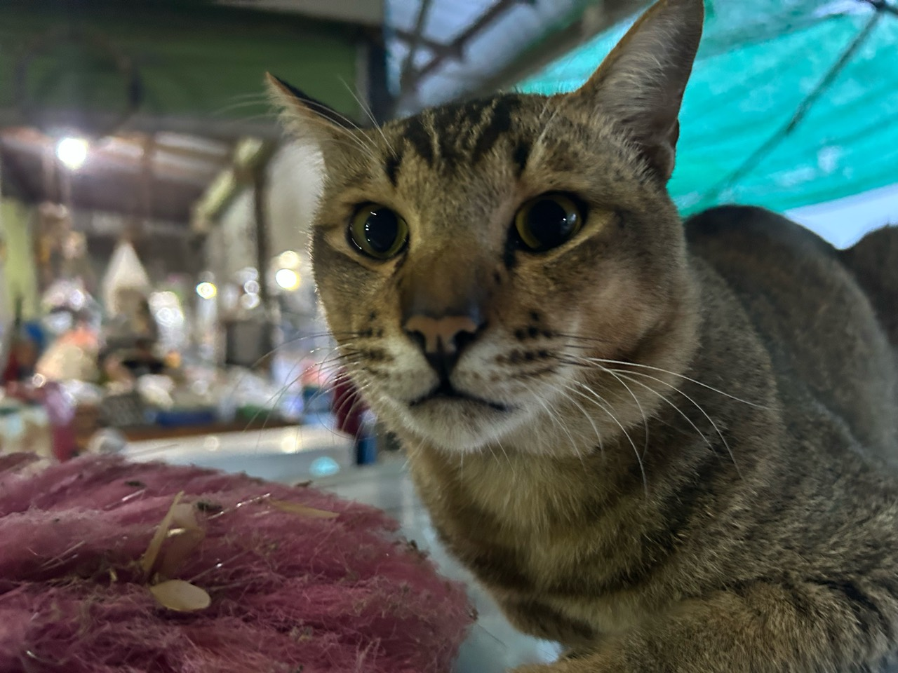

พื้นที่เล็ก ๆ ของคนรักแมว
ทุกอุ้งเท้า
ควรมีทางกลับบ้าน
ไม่ว่าจะกำลังตามหา พบเจอ หรืออยากมอบบ้านให้น้อง ให้ LightBaan ช่วยเชื่อมเรื่องราวของคุณเข้าด้วยกัน
เพราะบ้านที่อบอุ่น
เริ่มต้นจากคนที่ใส่ใจ

บ้านของใครบางคน
อาจเป็นคุณก็ได้นะ
เริ่มจากสิ่งเล็ก ๆ ใกล้ตัว
วันนี้คุณอยากช่วยน้องแบบไหน?
A CHANCE TO CONNECT
ทำความรู้จักน้อง ๆ
ตัวอย่างประกาศแมวในปทุมธานีที่รอให้คุณช่วย
ประกาศตัวอย่างสำหรับนำเสนอแนวคิดเว็บไซต์
A NEW HOME
แมวที่มีผู้รับเลี้ยงแล้ว
เรื่องราวของน้องที่ได้เริ่มต้นกับบ้านใหม่
สถานะการรับเลี้ยงเป็นข้อมูลจำลองสำหรับนำเสนอ
จากวันที่รอ…
สู่วันที่มีบ้าน
ทุกการรับเลี้ยงเริ่มจากการทำความรู้จัก พูดคุยกับผู้ดูแล และเตรียมพื้นที่ปลอดภัยให้น้อง
ดูเรื่องราวตัวอย่างของแมวที่มีผู้รับเลี้ยงแล้ว และเริ่มต้นโอกาสใหม่ให้อีกหนึ่งชีวิต
ค้นหาเพื่อนตัวใหม่ →เพราะทุกชีวิตต้องการบ้าน
MEET LIGHTBAAN
พื้นที่แห่งความหวัง
ของแมวและคนที่รักเขา
วันที่แมวหาย เจ้าของอาจต้องไล่หาประกาศจากหลายช่องทาง ขณะที่คนพบแมวก็ไม่รู้ว่าจะส่งข่าวถึงใคร LightBaan จึงเริ่มจากความตั้งใจที่จะรวมเรื่องราวเหล่านี้ไว้ในพื้นที่เดียว
เราช่วยให้คุณค้นหาประกาศตามอำเภอ ดูรูปและจุดสังเกตของน้อง และรู้จักแมวที่กำลังรอบ้านใหม่ เพื่อให้คนในชุมชนช่วยกันได้ง่ายขึ้น
รู้จักวิธีใช้งาน ↓A LITTLE HELP GOES A LONG WAY
เริ่มช่วยน้องได้ใน 3 ขั้นตอน
เลือกสิ่งที่คุณอยากช่วย แล้วเริ่มจากพื้นที่ใกล้ตัว
- 01
เลือกพื้นที่ของคุณ
เลือกอำเภอ แล้วกรองประกาศแมวหาย พบแมว หรือหาบ้าน
- 02
ทำความรู้จักน้อง
เปิดรายละเอียด ดูลักษณะเด่น นิสัย และข้อมูลพื้นที่ เพื่อเปรียบเทียบก่อนตัดสินใจ
- 03
ช่วยส่งต่อโอกาส
แชร์ลิงก์ประกาศให้คนในพื้นที่ หรือเตรียมข้อมูลเพื่อพูดคุยกับผู้ดูแล
GOOD TO KNOW
ก่อนเริ่มช่วยน้อง
เรื่องเล็ก ๆ ที่ช่วยให้การตามหา
และรับเลี้ยงเป็นไปอย่างรอบคอบ
แมวที่พบดูเหมือนแมวในประกาศ ควรทำอย่างไร?
เปรียบเทียบจุดสังเกต สีขน ปลอกคอ และพื้นที่ให้ครบ เตรียมภาพกับเวลาที่พบเพื่อแจ้งผู้ประกาศ รูปที่คล้ายกันเพียงอย่างเดียวยังยืนยันไม่ได้ว่าเป็นแมวตัวเดียวกัน
อยากรับเลี้ยง ควรเตรียมอะไรบ้าง?
เตรียมพื้นที่ปลอดภัย อาหาร กระบะทราย และเวลาในการดูแล พูดคุยกับสมาชิกในบ้าน รวมถึงสอบถามนิสัยและประวัติการดูแลของน้องจากผู้ประกาศก่อนตัดสินใจ
ตอนนี้เว็บไซต์เปิดใช้งานส่วนไหนแล้วบ้าง?
ทดลองเข้าสู่ระบบ ลงประกาศแมวหาย พบแมว และหาบ้าน พร้อมรูปและหมุด ดูรายละเอียด กรองตามอำเภอ และปิดประกาศได้ ข้อมูลอยู่เฉพาะในแท็บนี้ ไม่สร้างบัญชีหรือส่งข้อความถึงผู้อื่นจริง
SMALL ACTS, BIG DIFFERENCE
ไม่ต้องเลี้ยงแมว ก็ช่วยน้องได้
แค่ช่วยสังเกต แจ้งเบาะแส หรือส่งต่อประกาศ คุณก็เป็นส่วนหนึ่งที่ช่วยพาน้องกลับบ้านได้